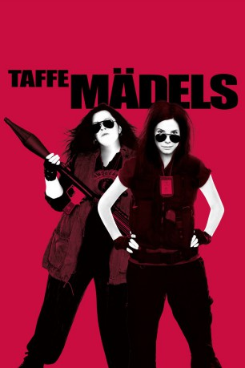

#2262 Taffe Mädels
Alternativ: The Heat
 
 IMDB-Wertung: 6.6 / 10
IMDB-Wertung: 6.6 / 10  Metascore: 60
Metascore: 60 
Die FBI-Agentin Sarah Ashburn ist eine Einzelgängerin. Sie hat weder Freunde, noch gibt es irgendwelche Kollegen, die sie besonders schätzt. Um einen Drogenbaron, der in der Stadt sein Unwesen treibt, dingfest zu machen, wird ihr die resolute Bostoner Streifen-Polizistin Shannon Mullins zur Seite gestellt. Sarah ist davon überhaupt nicht begeistert und fühlt sich überrannt. Auch die Polizistin Shannon ist von ihrer neuen Kollegin wenig angetan. Denn auch sie hat mit zwischenmenschlichen Beziehungen einige Schwierigkeiten. Die beiden eigensinnigen Frauen müssen lernen, miteinander auszukommen und in einem Team zusammen zu arbeiten. Dem russischen Drogenboss das Handwerk zu legen, erweist sich nämlich schwieriger als gedacht. Für Sarah und Shannon wird es Zeit, über ihre eigenen Schatten zu springen und wenigstens für ihre Arbeit eine Art Freundschaft zu knüpfen.
Jahr: 2013
Dauer: 117 Minuten
FSK: 16
Land: USA Studio: 20th Century FoxTonspuren: DTS - ,
Untertitel: Deutsch,
Auflösung: 1080p (1920x800) Größe: 6563 MB
Genre: Action, Komödie, Krimi
Regisseur: Paul Feig
Drehbuch: Katie Dippold
Soundtrack: Michael Andrews
Darsteller:
 Sandra Bullock als Ashburn
Sandra Bullock als Ashburn Melissa McCarthy als Mullins
Melissa McCarthy als Mullins- Demian Bichir als Hale
 Marlon Wayans als Levy
Marlon Wayans als Levy Michael Rapaport als Jason Mullins
Michael Rapaport als Jason Mullins Jane Curtin als Mrs. Mullins
Jane Curtin als Mrs. Mullins- Spoken Reasons als Rojas
 Dan Bakkedahl als Craig
Dan Bakkedahl als Craig Taran Killam als Adam
Taran Killam als Adam Michael McDonald als Julian
Michael McDonald als Julian Thomas F. Wilson als Captain Woods
Thomas F. Wilson als Captain Woods John Ross Bowie als NY Agent
John Ross Bowie als NY Agent William Xifaras als Tough Guy #1
William Xifaras als Tough Guy #1 Tony Hale als The John
Tony Hale als The John- William Ambrose Kennedy als Desk Sergeant
 Tony V. als Precinct Officer
Tony V. als Precinct Officer- Amanda Good Hennessey als Woman with Kid
 Patty Ross als Drunk Woman
Patty Ross als Drunk Woman Kaitlin Olson als Tatiana
Kaitlin Olson als Tatiana Andy Buckley als Robin
Andy Buckley als Robin Adam Ray als LeSoire
Adam Ray als LeSoire Chris Gethard als Himself
Chris Gethard als Himself- Joey McIntyre als Peter Mullins
- Michael Tucci als Mr. Mullins
 Bill Burr als Mark Mullins
Bill Burr als Mark Mullins Nate Corddry als Michael Mullins
Nate Corddry als Michael Mullins Jessica Chaffin als Gina / Gina's Boobs
Jessica Chaffin als Gina / Gina's Boobs Jamie Denbo als Beth
Jamie Denbo als Beth- Raw Leiba als Paint Factory Henchman
 Ben Falcone als Blue Collar Man
Ben Falcone als Blue Collar Man Joe Stapleton als O'Flanagan's Mother
Joe Stapleton als O'Flanagan's Mother Steve Bannos als Wayne
Steve Bannos als Wayne Zach Woods als Paramedic
Zach Woods als Paramedic Elliot Santiago als Dealer
Elliot Santiago als Dealer Mitch Silpa als Dealer
Mitch Silpa als Dealer- Katie Dippold als ER Nurse
- Devon Diep als LeSoire Dancer
 Lilith Astaroth als Nightclub Attendee , uncredited
Lilith Astaroth als Nightclub Attendee , uncredited- Danny Belford als Dancer , uncredited
 Marshall Berenson als Special Agent Duncan , uncredited
Marshall Berenson als Special Agent Duncan , uncredited- William Bloomfield als FBI Agent , uncredited
 Brina als Business Woman , uncredited
Brina als Business Woman , uncredited Chemi Che-Mponda als Pedestrian , uncredited
Chemi Che-Mponda als Pedestrian , uncredited Shawn Contois als Club-Goer , uncredited
Shawn Contois als Club-Goer , uncredited- Guy Cooper als Police Officer , uncredited
 Alexandra Creteau als Club-Goer , uncredited
Alexandra Creteau als Club-Goer , uncredited Luis Da Silva Jr. als Dealer#4 , uncredited
Luis Da Silva Jr. als Dealer#4 , uncredited Aaron Dorsey als Orderly , uncredited
Aaron Dorsey als Orderly , uncredited Steven Dougherty als Dealer #5 , uncredited
Steven Dougherty als Dealer #5 , uncredited Paul Feig als Doctor , uncredited
Paul Feig als Doctor , uncredited
Datei: X:\2013(N-Z)\Taffe Mädels (2013, FSK16, 1920x800).mkv seit 25.10.2015
Festplatte: HD 2013(I-Z)-2014(A-Z)
 Es gibt insgesamt 133 Filme in der Gruppe '2013(N-Z)'
Es gibt insgesamt 133 Filme in der Gruppe '2013(N-Z)'